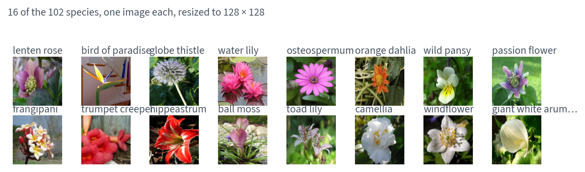
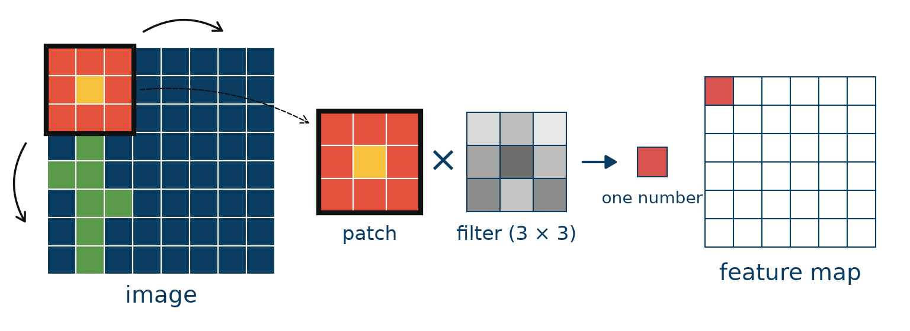
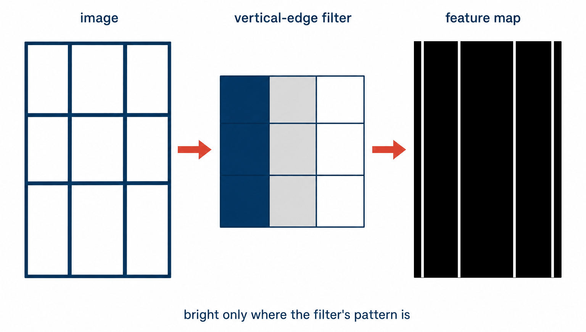
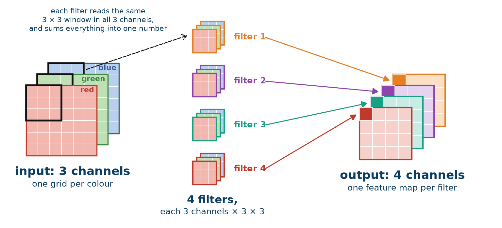
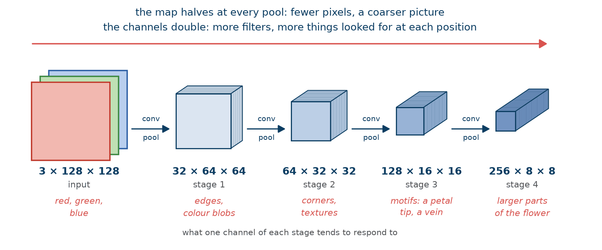
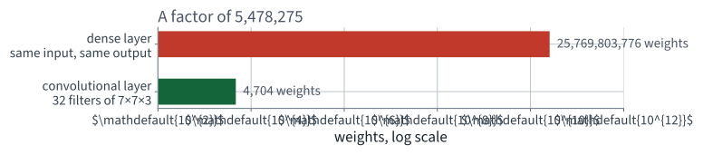
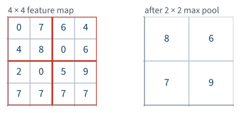
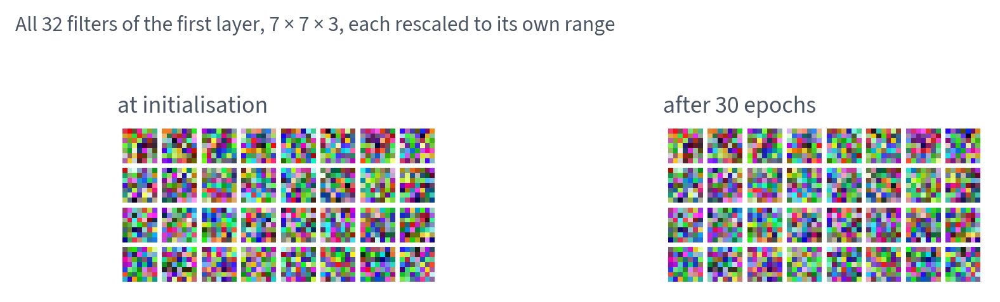
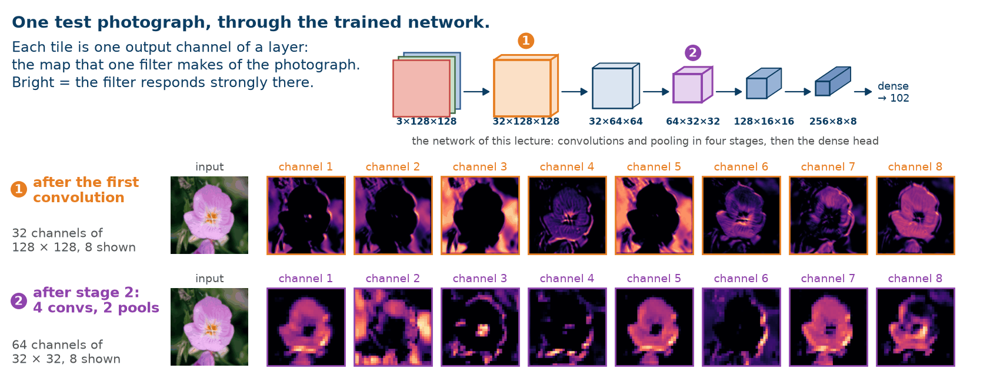

Flowers102
Lecture 12 Géron Ch. 12
Applications of Machine Learning
BSc Mathematics of Artificial Intelligence · Third year
Lecture 11 trained a fully connected network with no labels, on 28×28 greyscale images (Fashion-MNIST) flattened to 784 numbers:
Today’s method fixes both problems at once, and the derivation says exactly how much it saves.
A horticultural wholesaler receives mixed pallets of cut stems and has to sort them by species before they reach the auction floor.
Same shape of problem as the garment sorter in Lecture 7. Everything that makes it harder is in the pixels.
Two requirements hiding in one sentence: a classifier over a fixed list of species, and a usable notion of confidence.
We build the first today. The second waits until the numbers are good enough to be worth calibrating.
torchvision.datasets.Flowers102 — 8,189
photographs of 102 flowering species common in the United
Kingdom.
from torchvision.datasets import Flowers102
train = Flowers102("data", split="train", download=True)
val = Flowers102("data", split="val", download=True)
test = Flowers102("data", split="test", download=True)
About 345 MB. It is one of the datasets the textbook names for this chapter, and the split used here is the one shipped with it — so every result in the literature is on the same 6,149 test images.

Different scales, different backgrounds, different lighting — and several of these species are hard to tell apart by eye.
Only the first of those has a structural answer. It is the answer this chapter is about.
| Split | Images | Per class | Used for |
|---|---|---|---|
| train | 1,020 | 10, exactly | fitting |
| val | 1,020 | 10, exactly | choosing |
| test | 6,149 | 20–238 | reporting, once |
There are six times as many test images as training images.
Because somebody had to look at every photograph and name the species.
Design for that. A method that needs thousands of labelled examples per class is not a method you can deploy here.

Lay a small grid of weights on a $3 \times 3$ patch, multiply and add: one number. Slide one pixel and repeat. The numbers form the feature map, $6 \times 6$ from an $8 \times 8$ image.

A filter is a pattern: the sum is large where the patch looks like it. This one sees vertical edges, not horizontal ones. A network learns its filters.

A filter spans every input channel: $C_{\text{in}} \times k \times k$ weights, one output map. Use $C_{\text{out}}$ filters and the output has $C_{\text{out}}$ channels, the input of the next layer.

After the first layer a channel is one filter’s map, not a colour. Each pool halves the map and each stage doubles the channels: fewer positions, more aspects of the input described at each one.
You have a multilayer perceptron that works. Resize every photograph to 128 × 128, flatten it, and feed it in.
| Count | |
|---|---|
| Inputs, 128 × 128 × 3 | 49,152 |
| Outputs, 32 values at every pixel position | 524,288 |
| Weights in one fully connected layer between them | 25,769,803,776 |
That is 96 GB of float32 for one layer. The full argument is this lecture’s mathematics block; here it is just a reason to do something else.
The same output, $C_{\text{out}} \times H \times W$, two ways. A dense layer joins each of the $C_{\text{in}}HW$ input values to each of the $C_{\text{out}}HW$ output values. A convolution has $C_{\text{out}}$ filters of $C_{\text{in}} \times k \times k$ weights, the same at every position.
the channels cancel: the image size, squared, over the window
5,478,275
times fewer weights at $H = W = 128$, $k = 7$: 4,704 against 25,769,803,776.

A logarithmic axis, and the two bars still barely fit on the same figure.
Sharing the weights assumes that a pattern means the same thing wherever it appears. Let $T_{\mathbf{v}}$ be the operator that shifts an image by the vector $\mathbf{v}$:
A map $f$ is equivariant to translation when
Shift then compute, or compute then shift — the same answer. A convolution has this property because its weights do not depend on the position; it holds exactly away from the border, where zero padding invents input that was not there.
After a couple of convolutions, halve the height and width by keeping only the largest value in each $2 \times 2$ block.
There is a fourth consequence — invariance — and it comes two slides on.

Sixteen numbers in, four out, and the four are the largest of each block.
A map $g$ is invariant to translation when
The output does not move at all, so it no longer says where. Classification wants that; equivariance alone does not give it.
A $2 \times 2$ max pool is invariant to any shift that keeps the maximum inside its own window — so half the one-pixel shifts, in each direction.
The invariance is approximate and it is built, one factor of two at a time. Nothing in the architecture declares it.
For an input $x$ with $C$ channels and a kernel $w$ of size $k \times k$, the output at position $(i, j)$ of filter $f$ is
A dot product between the kernel and a window of the input, repeated at every position. The sum over $c$ is why a filter reads all the input channels at once.
nn.Conv2d, and the defaults you did not ask fornn.Conv2d(
in_channels=3, # must match the previous layer's output
out_channels=32, # how many filters -> how many output maps
kernel_size=7,
stride=1, # the default
padding=3, # NOT the default; the default is 0
bias=False, # a batch-norm follows, and it has its own shift
)
The default you did not ask for: padding defaults to zero, which silently shrinks every feature map by $k-1$ and will eventually give you a shape error twelve layers later.
| Stage | Layers | Output |
|---|---|---|
| 1 | conv 7×7 ×32, conv 3×3 ×32, pool | 32 × 64 × 64 |
| 2 | conv ×64, conv ×64, pool | 64 × 32 × 32 |
| 3 | conv ×128, conv ×128, pool | 128 × 16 × 16 |
| 4 | conv ×256, pool | 256 × 8 × 8 |
| head | flatten, dense 256, dropout, dense 102 | 102 |
Channels double as the map halves — the textbook’s own rule of thumb: what pooling takes away in resolution, the extra filters give back in channels.
def conv_block(c_in, c_out, k=3):
return [nn.Conv2d(c_in, c_out, k, padding=k // 2, bias=False),
nn.BatchNorm2d(c_out), nn.ReLU()]
net = nn.Sequential(
*conv_block(3, 32, k=7), *conv_block(32, 32), nn.MaxPool2d(2),
*conv_block(32, 64), *conv_block(64, 64), nn.MaxPool2d(2),
*conv_block(64, 128), *conv_block(128, 128), nn.MaxPool2d(2),
*conv_block(128, 256), nn.MaxPool2d(2),
nn.Flatten(),
nn.Linear(256 * 8 * 8, 256), nn.ReLU(),
nn.Dropout(0.5),
nn.Linear(256, 102),
)
Thirty modules. Convolution and pooling are today’s; everything else was on a slide in Lectures 7 and 8.
| Part | Parameters | Share |
|---|---|---|
| Every convolution and batch-norm layer together | 586,720 | 12.2% |
| One dense layer, 16,384 → 256 | 4,194,560 | 87.3% |
| Output layer, 256 → 102 | 26,214 | 0.5% |
| Total | 4,807,494 | 100% |
Nine parameters in ten are in the layer that is not convolutional.
opt = torch.optim.Adam(net.parameters(), lr=3e-4)
lossf = nn.CrossEntropyLoss()
for epoch in range(30):
net.train()
for xb, yb in train_loader:
opt.zero_grad()
loss = lossf(net(xb), yb)
loss.backward()
opt.step()
Exactly the five lines from Lecture 8. Convolution changed the model; it did not change the loop, because autograd does not care what the modules are.

Look at the two blocks for ten seconds, and say what changed.
import torch.nn.functional as F
# init_filters: a copy of net[0].weight, taken before the first step
before, after = init_filters.flatten(), net[0].weight.flatten()
print(f"cosine similarity {F.cosine_similarity(before, after, dim=0):.4f}")
print(f"mean |change| / mean |weight| "
f"{(after - before).abs().mean() / before.abs().mean():.1%}")
| Value | |
|---|---|
| cosine similarity, all 4,704 weights before against after | 0.9880 |
| mean absolute change, as a share of the mean weight | 14.1% |
| weights that changed sign | 160 |
The weights moved. No structure appeared — the right-hand block is still noise, and thirty epochs of training bought it.
The textbook picture of a first layer — colour blobs, oriented edges — is real, and you will see it next lecture. It comes from a corpus a thousand times this size.

After the first convolution each channel is still a picture of the flower. After stage 2 the maps are coarse: each keeps one aspect of it, not the picture.
That last line is a loss of information we chose. It is the right choice for naming a species, and the wrong one for any task that must say where.
padding=0 on every convolution and push one image
through the network. Every map shrinks, and the first linear layer no
longer matches what reaches it.
Not presented — for afterwards
five, in the style of the written paper
Solutions on Lecture 13’s deck.
Solutions on Lecture 13’s deck.
The five set at the end of Lecture 11
not part of this lecture
1. At a code of 32 numbers, the test error per pixel is 0.01519 for PCA with 32 components, 0.01523 for a linear…
Without ReLUs the network compresses along flat directions only, and PCA is already the best flat compression, so training lands on it. The ReLUs let the map curve: the sixth below PCA is what no flat compression gets.
2. At a code of 128 numbers the non-linear autoencoder's test error is 0.01179, above PCA's 0.00641. A colleague…
It compares an exact optimum with a trained approximation. PCA is computed exactly; the network, one hidden layer of 256 and twenty epochs, has not found the best of its larger class. More capacity is not more accuracy until the optimiser has found it.
3. The code size is set equal to the number of pixels and nothing else constrains the network. State what the…
The identity, with zero loss. The code is a re-encoding of the pixels that loses nothing and learns nothing.
4. On noisy test images, the error against the clean image is 0.05264 for the noisy image itself, 0.02408 for…
The denoising one: phone photographs are noisy, and there it cuts the plain one's error by a third. The plain one copies part of the noise; the denoising one learned noisy-in, clean-out. On clean images it is worse.
5. Nearest-neighbour retrieval in a 32-number autoencoder code scores the same precision at ten as in the 784…
A twenty-fourfold saving in storage and in the cost of every comparison, at equal precision. It could not beat the pixels because the reconstruction loss contains no information about which images are similar: the code is a compressed account of pixel distance.
Lecture 13 · Géron Ch. 12
Why features learned on a large labelled corpus transfer to these
flowers
Freeze the backbone and train a head; then let the last block move, at
its own learning rate
Augmentation — and why it belongs to the training loader only
Run the Lecture 12 notebook first